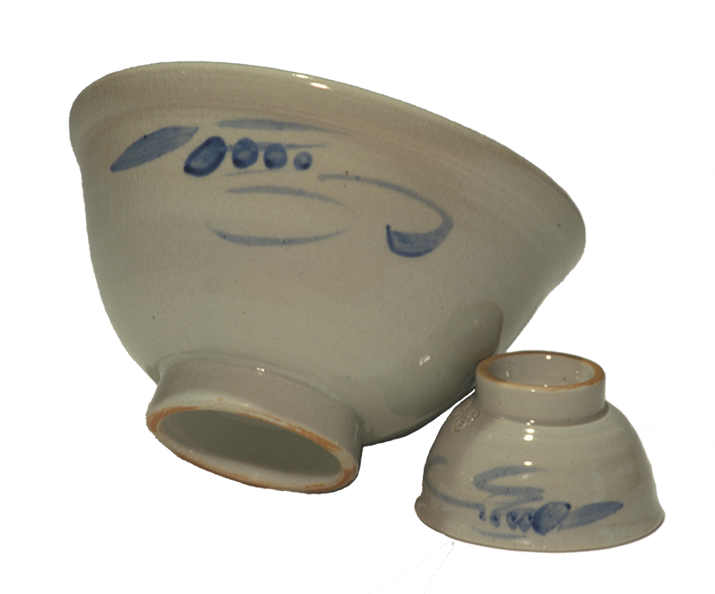

사기장
여러 가지 흙을 혼합하여 1,300℃이상의 높은 온도에서 사기그릇을 구워내는 기술

제작과정
사토를 채굴하는 것부터 구워내는 작업까지이다. 우선 모래흙(사토)을 구한 후 물에 넣어 이물질을 제거하는 수비과정을 거친다. 이 과정이 끝나면 순수 흙으로 그릇의 형태를 만드는 물레작업을 한다. 만들어진 그릇을 가마에 넣고 초벌구이와 유약을 바른 뒤 다시 재벌구이를 해서 구워낸다. 전통적인 나무로 만든 발물레를 시계방향으로 회전시키는데, 이러한 물레 돌리는 방법이 한국 도자기 장인들의 기술이다.
연원
우리나라 도자기는 고려시대부터 천하제일의 비색청자로서 그 명성을 떨쳤다. 조선시대에는 국가기관인 사옹원(司甕院)에서 자기를 제작하였는데, 경기도에 분원을 설치하여 왕실에서 사용하는 자기를 특별히 제작하였다. 조선 후기 관요(정부 관리하에 도자기를 만드는 곳)가 폐쇄되면서 도공들이 문경, 괴산, 단양 등 지방으로 흩어져 민요(민간에서 도자기를 만드는 곳)가 번창하였다.
특징
서민적이면서 활달한 조선분청사기와 단아한 선비의 향을 담고 있는 조선백자와 같이 한국적 정감과 멋을 나타내는 전통공예기술로서 가치가 매우 높다.
전승자
| 보유구분 | 이름 | 성별 | 기예능 | 지역 | 인정일 |
|---|---|---|---|---|---|
| 보유자 | 김정옥(金正玉) | 남 | 민속사기제작 | 경북 | 2018-01-12 |
| 전승교육사 | 박영덕(朴泳德) | 남 | 민속사기제작 | 경북 | 2013-01-14 |
소재지
경북